Grupos
De los más pequeños a los matrimonios: encuentra tu sitio y escribe a quien lo coordina.
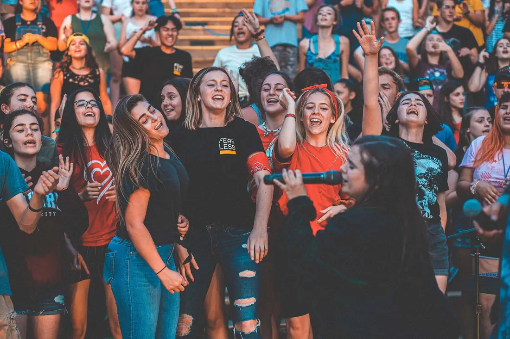
Niños
Catequesis para crecer en la fe desde pequeños, con sus familias. 2 grupos
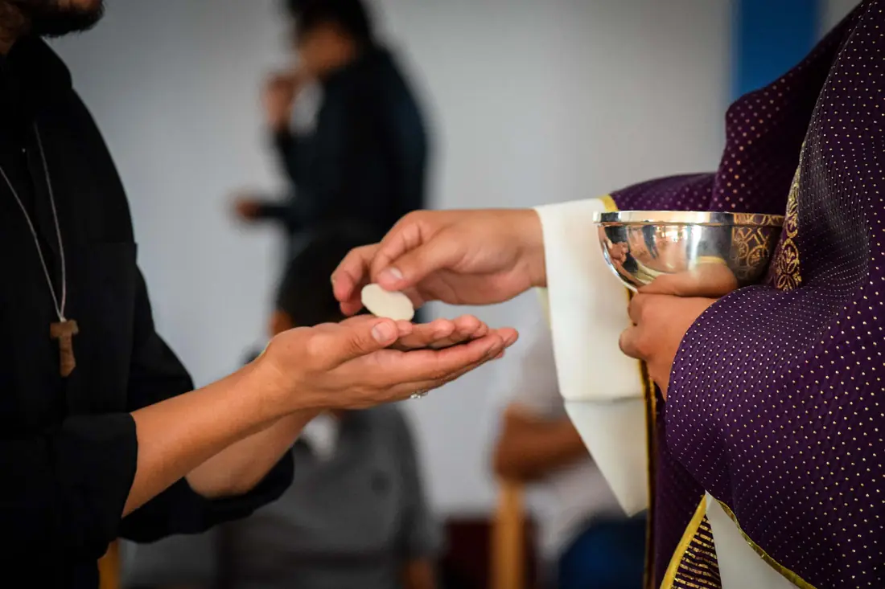
NiñosCatequesis de Iniciación Cristiana
Tres años, de septiembre a la primera semana de junio, para que los niños conozcan y vivan la fe. 1º: la historia de la Salvación. 2º: primera parte del catecismo; reciben la Confesión y la Confirmación. 3º: segunda parte; reciben la Eucaristía.
Lunes a jueves 17:30–18:30 · lunes y martes 18:30–19:30 · sábados 11:00–12:00
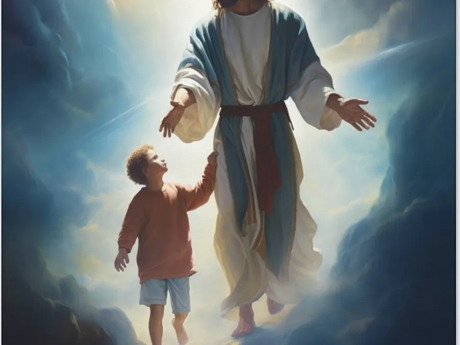
NiñosGrupo Lázaro
Catequesis y oración para niños, adolescentes y jóvenes con discapacidad intelectual, animadas por jóvenes voluntarios, con actividades de ocio compartido.
Lunes 18:30–19:30
Jóvenes
Grupos semanales y retiros hechos por jóvenes para jóvenes. 5 grupos
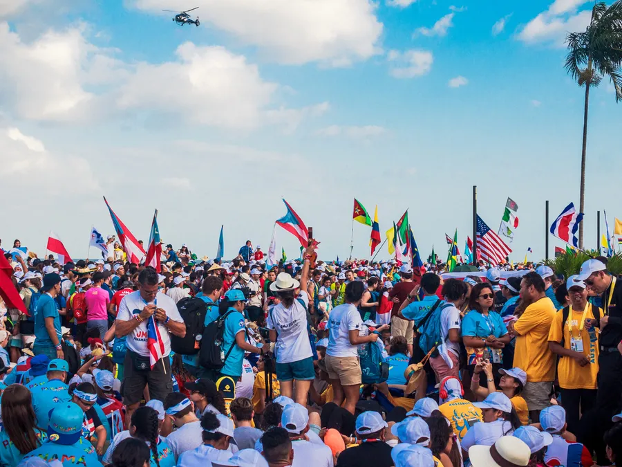
JóvenesLifeTeen
Juveniles de 5º de Primaria a 4º de ESO. Conocen al Señor con juegos, catequesis conjuntas y momentos de oración. La inscripción incluye 10 € de material.
Viernes 17:30–19:00 (5º EP a 1º ESO) · 19:30–21:00 (2º a 4º ESO)
- Jóvenes
Light Up
De 1º de Bachillerato a 1º de carrera: formación y catequesis sobre los temas que más preocupan hoy.
Viernes 19:30–21:15, en el Cerro del Mosquito
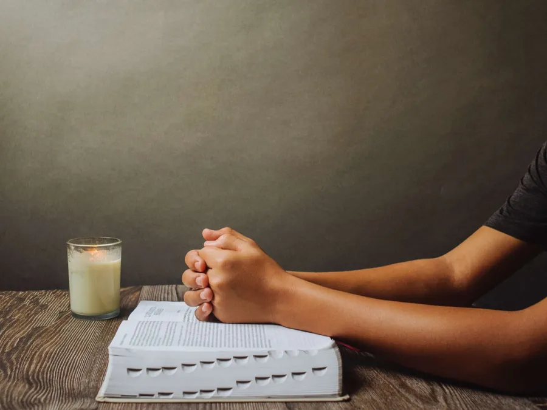
JóvenesBartimeo
Retiro parroquial de jóvenes para jóvenes de 1º y 2º de Bachillerato: una fuerte experiencia del amor de Dios, basada en Mc 10, 46-52.
Reuniones de preparación: domingos 18:30
Próximo: 11 de diciembre 2026 · 19 de noviembre 2027
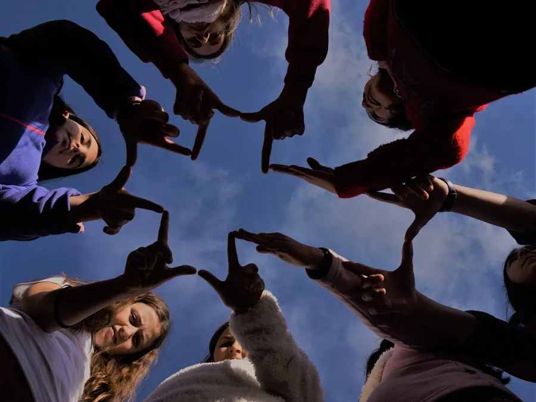
JóvenesEffetá
Retiro católico de jóvenes para jóvenes para vivir un encuentro personal con Dios. Las reuniones son para quienes ya lo han hecho.
Reuniones de preparación: miércoles 21:00
Próximo: 19 de marzo 2027
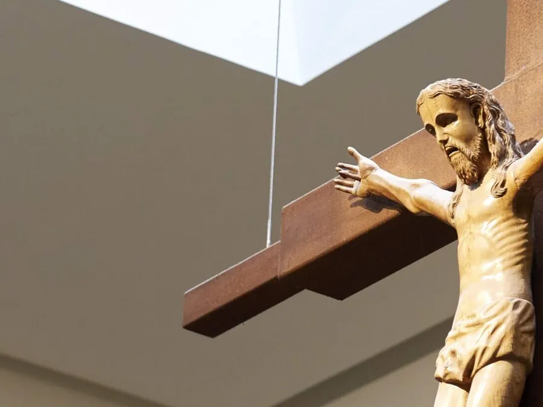
JóvenesNicodemo
Retiro de fin de semana para jóvenes profesionales de 24 a 35 años, organizado por laicos. Como caminante se hace una sola vez.
Reuniones de preparación: martes 21:00
Adultos y familias
Matrimonios, retiros, formación, adoración y caridad. 8 grupos
 Adultos y familias
Adultos y familiasEmaús mujeres
Retiro de fin de semana para adultas, organizado por laicas. Como caminante se hace una sola vez.
Reuniones: martes
Próximo: 12 de marzo 2027 · 1 de octubre 2027
 Adultos y familias
Adultos y familiasEmaús hombres
Retiro de fin de semana para adultos, organizado por laicos. Como caminante se hace una sola vez.
Reuniones: jueves 21:15
Próximo: 22 de octubre 2027
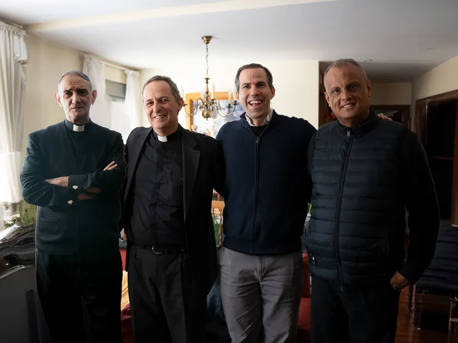
Adultos y familiasAcción Católica
Cada mes el párroco presenta un tema que se trabaja en pequeños grupos con el método de revisión de vida.
Reunión mensual
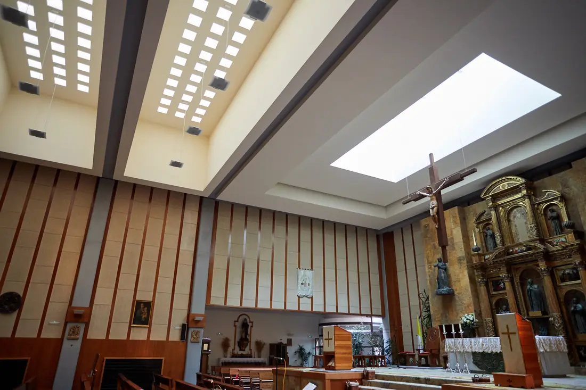
Adultos y familiasProyecto Amor Conyugal
Matrimonios que profundizan en su vocación con las catequesis de la Teología del Cuerpo de san Juan Pablo II.
Grupos 1, 2, 4, 5, 6 y 7: viernes tras la misa de 20:30 (2º, 3º o 4º del mes) · grupo 3: 3er sábado tras la de 10:30
 Adultos y familias
Adultos y familiasGrupos de novios
Charlas e itinerarios tutelados por matrimonios, en grupos de 5 o 6 parejas como máximo.
Próximo: 5 de febrero 2027 · 9 de abril 2027
 Adultos y familias
Adultos y familiasTortugas
Padres con hijos en el Cielo, que lo viven con la certeza de la vida eterna. Comparten y se apoyan con la guía del P. Javier Siegrist.
Cada tres semanas
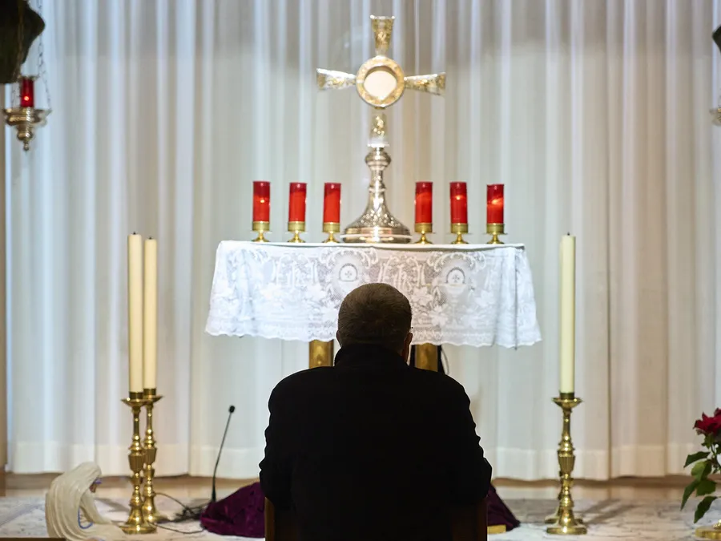
Adultos y familiasAdoración Nocturna Española
Vigilia con misa, charla espiritual, oficio divino, turnos de adoración, rosario y reserva del Santísimo.
Terceros viernes de mes, 22:00–5:00
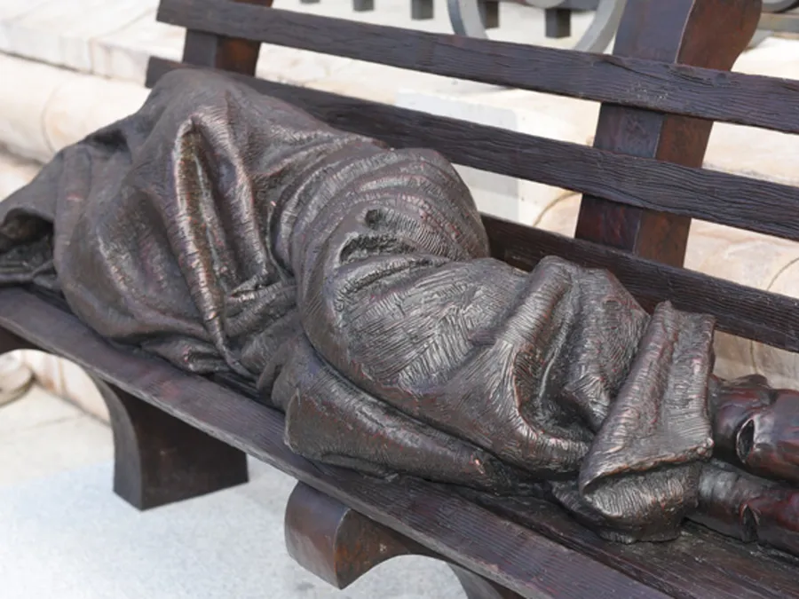
Adultos y familiasCáritas parroquial
Voluntarios que escuchan, orientan y ayudan a las personas necesitadas de nuestro entorno más próximo.
La comunidad parroquial
Mira en dos minutos cómo vivimos la fe en Boadilla.
Próximas fechas
Añádelas a tu calendario.
-
Retiro Bartimeo
Del 11 al 13 de diciembre de 2026
-
Retiro Simeón y Ana
Del 16 al 17 de diciembre de 2026
-
Retiro Talitha Qumi
Del 29 al 31 de enero de 2027
-
Cursillo prematrimonial
Del 5 al 7 de febrero de 2027
-
Retiro de Emaús mujeres
Del 12 al 14 de marzo de 2027
-
Retiro Effetá
Del 19 al 21 de marzo de 2027
-
Cursillo prematrimonial
Del 9 al 11 de abril de 2027
-
Retiro Simeón y Ana
Del 17 al 18 de abril de 2027
-
Cursillo prematrimonial
Del 4 al 6 de junio de 2027
-
Campamento San Martín 1
Del 20 al 30 de junio de 2027
-
Campamento San Martín XL
Del 30 de junio al 11 de julio de 2027
-
Campamento San Martín XL2
Del 11 al 18 de julio de 2027
-
Peregrinación a Loyola
Del 12 al 19 de julio de 2027
-
Retiro de Emaús mujeres
Del 1 al 3 de octubre de 2027
-
Retiro de Emaús hombres
Del 22 al 24 de octubre de 2027
-
Retiro Bartimeo
Del 19 al 21 de noviembre de 2027